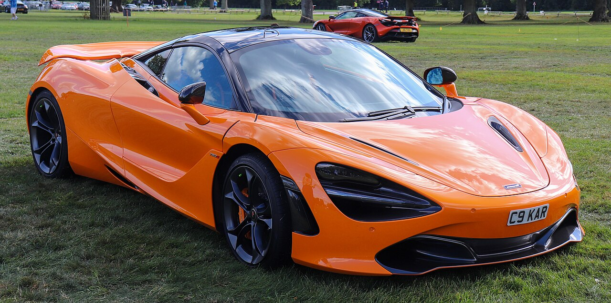
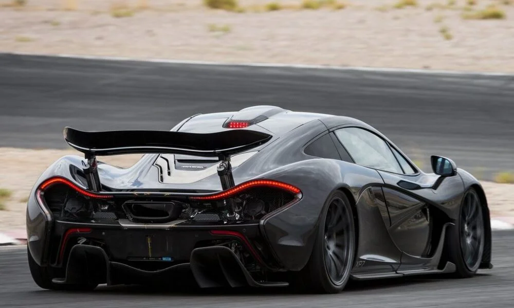
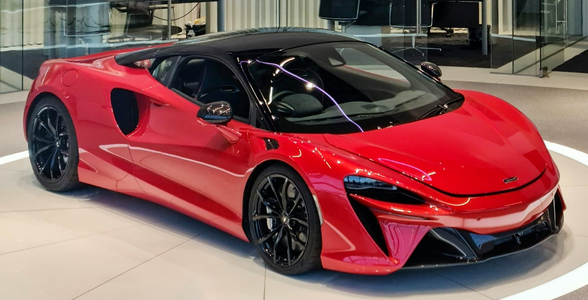

McLaren Automotive este un producător britanic de supercaruri fondat în 1963. Cunoscut pentru tehnologia derivată din Formula 1, fiecare McLaren este construit manual în Woking, Surrey, cu o atenție extremă la detalii și performanță.

Supercar extrem de rapid și ușor. Motor V8 biturbo de 4.0L cu 720 CP, 0-100 km/h în 2.9 secunde.

Mașină hibridă legendară. Una dintre cele mai spectaculoase creații ale McLaren, cu 903 CP combinat.

Tehnologie modernă și eficiență maximă. Primul McLaren hibrid de serie, cu arhitectură complet nouă.